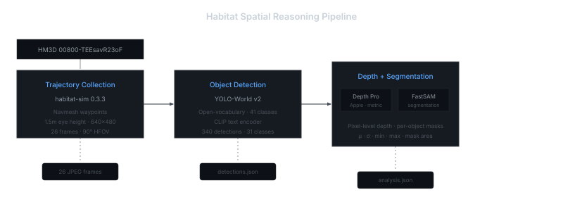
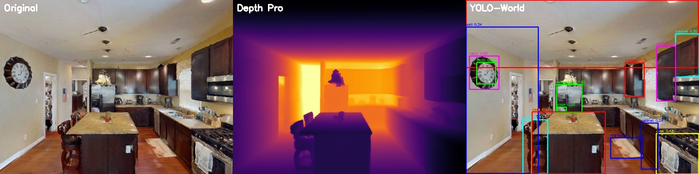
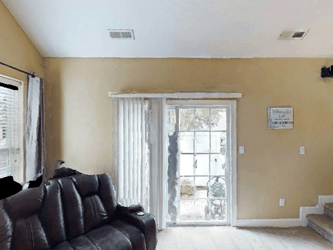

Habitat Spatial Reasoning Pipeline
End-to-end egocentric perception on HM3D photorealistic scenes.


00800-TEEsavR23oF. Left: Original RGB frame. Center: Depth Pro metric depth estimation (Inferno colormap, range 1.7–12.7 m). Right: YOLO-World v2 detection — 23 objects across 14 classes.1. Trajectory Collection
The HM3D minival scene 00800-TEEsavR23oF — a 398 m² furnished residential space spanning 2 floors and 7 rooms — is loaded into habitat-sim 0.3.3. An agent equipped with a pinhole RGB camera at 1.5 m eye height (90° HFOV, 640×480 resolution) navigates via navmesh-constrained waypoints. The pathfinder generates random navigable points perturbed with directional walk heuristics, covering 16.6 m × 7.7 m of walkable area. 26 frames are captured with per-frame position vectors and quaternion rotation metadata.

2. Object Detection
YOLO-World v2 (yolov8s-worldv2.pt, 24.7 MB) operates in open-vocabulary mode — objects are specified by natural language prompts mapped through a CLIP text encoder, requiring no retraining for novel categories. Our vocabulary spans 41 indoor object classes at a confidence threshold of 0.15.
The detector identified 340 objects across 26 frames (13.1 per frame on average), recognizing 31 unique classes:
ceiling
wall
couch
pillow
floor
window
chair
lamp
mirror
rug
door
sofa
table
curtain
desk
oven
picture
plant
refrigerator
sink
television
clock
book
bag
bottle
bowl
bed
person
tv
vase
3. Depth Estimation and Segmentation
Depth Pro (Apple, 2024) estimates metric depth from a single RGB frame — no stereo pair or LiDAR input required. The 1.8 GB ViT-based model outputs pixel-level depth in meters. FastSAM provides lightweight instance segmentation from YOLO-World bounding box prompts; predicted masks are resized from FastSAM's internal 640 px resolution to the original frame dimensions via nearest-neighbor interpolation.
Per-object depth analysis — Frame 0000
| Object | Conf. | Mean depth | σ | Range | Mask pixels |
|---|---|---|---|---|---|
| couch | 0.86 | 3.11 m | 0.41 | [2.28, 4.64] m | 36,527 |
| ceiling | 0.50 | 3.92 m | 0.56 | [2.35, 6.11] m | 67,403 |
| sofa | 0.44 | 4.59 m | 0.36 | [3.54, 5.69] m | 2,676 |
| chair | 0.33 | 6.79 m | 0.68 | [5.43, 8.56] m | 1,051 |
| floor | 0.35 | 4.39 m | 2.10 | [2.95, 14.66] m | 14,646 |
Depth ranges by frame
| Frame | Min | Max | Span | Notable |
|---|---|---|---|---|
| 0000 | 2.28 m | 16.05 m | 13.77 m | couch at 3.11 m, chair at 6.79 m |
| 0001 | 1.65 m | 12.67 m | 11.02 m | refrigerator at 5.39 m |
| 0002 | 2.61 m | 4.12 m | 1.51 m | narrow corridor — minimal depth variation |
| 0003 | 1.86 m | 8.48 m | 6.62 m | bedroom, open doorway visible |
| 0004 | 1.12 m | 9.11 m | 7.99 m | close to cabinet, deep sightline through room |
4. Setup and Reproducibility
The pipeline uses two isolated Python environments to resolve dependency conflicts between habitat-sim's native C++ bindings (which require numpy < 2, Magnum, and Pillow 10.4) and the ML stack (PyTorch 2.11, numpy 1.26).
| Environment | Python | Manager | Purpose |
|---|---|---|---|
habitat-sim | 3.9 | conda | 3D rendering — habitat-sim 0.3.3, Magnum bindings |
.venv | 3.12 | uv | ML models — YOLO-World, Depth Pro, FastSAM |
# Full pipeline
bash run_pipeline.sh
# Individual stages
conda run -n habitat-sim python scripts/collect_trajectory.py \
--scene data/hm3d/minival/00800-TEEsavR23oF/TEEsavR23oF.basis.glb --frames 25
source .venv/bin/activate
python scripts/detect_objects.py --confidence 0.15
python scripts/analyze_scene.py --max-frames 55. Design Decisions
Modular stage interfaces. Each stage communicates through JPEG and JSON — standard, inspectable formats that allow independent debugging, model substitution, and distributed execution. Replacing YOLO-World with DETR or Depth Pro with MiDaS affects only the relevant stage.
Open-vocabulary detection. Object categories are specified as a natural language vocabulary via CLI argument. Changing the detection target from "chair, table, sofa" to "fire extinguisher, exit sign, wheelchair" requires no retraining — only a text prompt change.
Navmesh-constrained navigation. Waypoints are restricted to navigable regions computed from the scene's geometry. This produces realistic human-like walking patterns rather than arbitrary floating-camera trajectories through walls.
FastSAM as NanoSAM proxy. NanoSAM targets NVIDIA Jetson edge devices with TensorRT-optimized inference. FastSAM provides architecturally equivalent functionality (bounding box prompt → instance mask) through the ultralytics ecosystem with no custom build dependencies.
6. Known Limitations
| Constraint | Proposed mitigation |
|---|---|
| Depth Pro inference at 5–10 s/frame on CPU | Batch overnight; evaluate MPS acceleration |
| FastSAM internal 640 px resize produces mask edge artifacts | Upgrade to bilinear interpolation for the resizing step |
| No temporal object identity across frames | Apply Hungarian matching with Kalman-filtered tracking |
| Textureless surfaces yield near-zero detections | Expected behavior for geometric test scenes; HM3D provides full photorealistic texture coverage |
| Thin structures (chair legs, lamp cords) below detection threshold | SAM-family models struggle with sub-10 px features; higher resolution may help |
| Monocular depth ambiguity at object boundaries | Denser trajectory sampling improves multi-view consistency |
AI Habitat · HM3D Dataset v0.2 · YOLO-World (CVPR 2024) · Depth Pro (Apple, 2024) · NanoSAM · FastSAM (ICCV 2023) · Source code